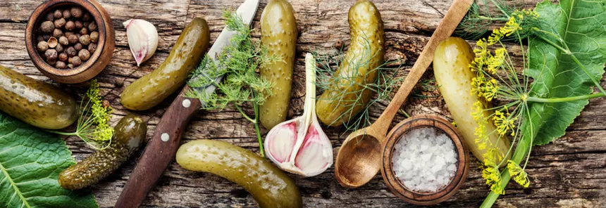
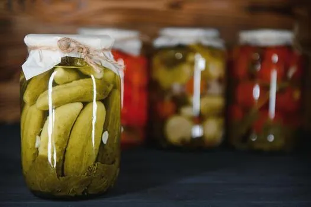

Fresh • Homemade • Delicious
Small-batch pickles crafted with love from our garden to your table.
Shop Our PicklesOur Story
At The Sour Pickle, we believe the best pickles start with the best ingredients. We grow our cucumbers in rich, organic soil and pickle them within hours of harvest to lock in that perfect crunch.
Every jar is made in small batches using time-honored recipes passed down through generations. No preservatives, or artificial flavours.

Why Choose Us
Farm Fresh
We grow our own cucumbers using sustainable farming practices.
Community Oriented
We source locally and give back to the farmers who grow with us.
Always Crunchy
Our cold-batch process ensures every bite is crisp and satisfying.